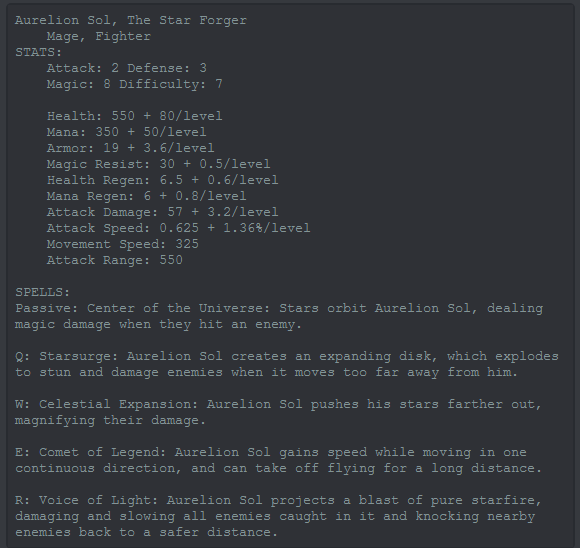
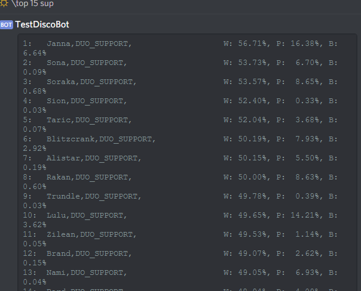

Development
The bot is made with Python 2.7. To utilize Discord's API, I used Discord.py, a python library that wraps Discord's API. For the LoL-specific commands, I used another wrapper library called lolwatcher to access specific data, including player information, and game information. I was also planning on using lolwatcher to access static game data, like champions and items, but found it much easier to directly access Riot's static data JSON files. I downloaded necessary files, parsed the json, and uploaded the data to the text channels.

The stats and abilities of the champion, Aurelion Sol.
I also have the bot grab the splash art and the skin art for the champion. The bot downloads the image from Riot Game's static data portal, crops the image, and uploads it to the text channel, using pil and resizeimage.

The splash art for Aurelion Sol.
To get specific champion statistics, like playrate, winrate, and top champions of certain roles, I used a wrapper library, py_gg, to get champion data from champion.gg.

The top 15 supports, sorted by winrate. You can also see pickrates and banrates.
LoL isn't the only thing Disco bot can do. It also has basic music functionalities. Disco bot keeps a linked list of music queued (for easier swapping, removing from the middle of the list, and inserting), and always plays the song at the head. You can queue up songs from youtube or soundcloud, change the volume, pause and skip songs, and get information on the song.

Queueing and playing "Something Just Like This."
Current Status
Currently, the bot is in development. It has very basic functionality, and can only perform a few commands. It has:
- Basic music functionality: play, queue, pause, and skip songs.
- Basic LoL player search: search a player to get statistics, like winrate, rank, and games played.
- Basic LoL static data search: search a champion or item to get in-game data or statistics.
Planned Features
Disco bot is early in development, and there are many more features planned:
- Updated music funcionality, inlcuding playlists.
- More LoL commands, including game modes, champion builds, etc.
- Ability to get updates on current games.
I am also planning on creating a database to store certain "non-changing" data, like champion names and ids, to limit the number of API calls and downloads. This, along with caching, should help improve performance for certain commands.